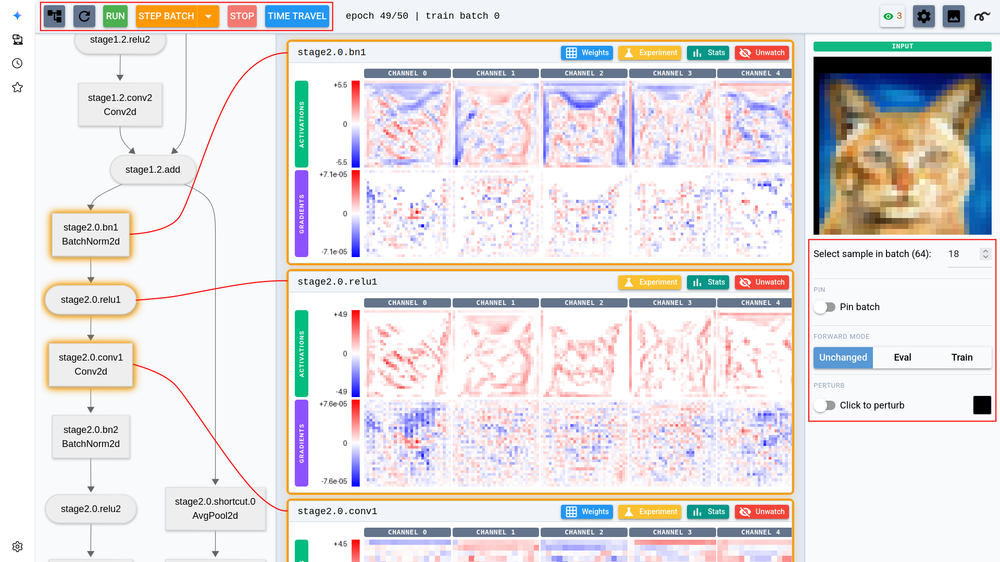

UI guide¶
When a session starts, NaNsense serves a web page and pauses on the first batch.

The main view: stepping controls, architecture graph, layer cards with activations/gradients, and the input panel. Each layer in the architecture can be clicked to open the respective layer card.
The top bar¶
You drive the run from the top bar: Step Batch advances one batch, Run runs to the end and then pauses, and Stop pauses a free-running session. The dropdown next to Step Batch steps a whole phase, a whole epoch, or up to a custom position.
Time Travel jumps back to the start of any cached epoch. It is enabled once the training loop is wrapped in a restorer, which checkpoints each epoch start to disk.
Refresh pulls a fresh snapshot while training free-runs, without pausing it. The settings dialog (gear icon) sets the automatic Update frequency — how often views refresh during Run — plus the recording and numerical debugging options.
The main page¶
The left pane shows the model as a clickable architecture graph. Click a node to watch that layer: its activations and gradients appear as a card, and from that point on every batch feeds them into running statistics. Watched views refresh on every pause and, while training runs, on the Update frequency cadence.
Watching slows down training and consumes memory, so it's generally better to watch only a few layers at a time.
Each card renders one strip per tensor: a row of per-channel images on a shared diverging blue-white-red scale. From the card you can jump to the layer's stats view, weights view, or experiment page.
The input panel¶
The right sidebar controls which input the layer views are computed from. A model with several inputs gets an Input dropdown to choose which one the pane shows and perturbs; a non-RGB image needs an input_transform to display (see the Wiring guide), and a flat (N, C) input shows as a clickable per-feature strip. Select sample in batch picks which sample of the current batch to show.
The views follow the live training batch by default; Pin freezes the current batch as a fixed input that NaNsense re-runs at every update, so you can watch one input's activations evolve as training proceeds and across time travel. Forward mode (Unchanged / Eval / Train) sets how BatchNorm and dropout behave on those re-runs.
Perturb lets you click pixels to edit the input; NaNsense re-runs the model and the layer cards switch to the diff, so you can trace a single changed pixel through the network — this is how you measure a receptive field.
The stats page¶
Open a watched layer's stats view for a closer look at its distributions over the epoch. The page has three views, switchable per layer:
Histogram leads with a statistics table per phase (activations and gradients side by side), above histograms of the layer's activation and gradient values over the epoch. A Per channel switch breaks the histogram down to one row per channel — the quickest way to spot dead neurons. A Show subnormal/overflow checkbox marks the dtype-aware band edges where fp16 gradients underflow; it is pre-checked when a numerical warning is active.
Min/max is a gallery of the input patches that drove each channel to its most extreme responses — see the showcase.
Graphs plots per-epoch statistics (mean, std, median, min, max, plus a dead-channel count for activations) against the epoch number, one line figure for activations and one for gradients, with the legend as the stat selector. Below them, a Weights section adds one figure per weight tensor, sampled once per epoch — handy for watching weight drift across a whole run.
The Phase dropdown's last entry, Current batch, switches the data source from the epoch accumulators to the last captured batch. In this mode any layer can be selected, watched or not. The page opens on the phase currently training once that phase has collected stats for the opened layer, and on Current batch otherwise.
The top bar's eye icon shows the shown-layer count and pauses or resumes stats collection without hiding the cards; its menu also shows/hides all layers and deep-links each layer's stats.
The settings dialog can switch stats collection between the watched layers (the default), every layer, or none. Outside the default, showing and hiding cards on the main page is per-tab and doesn't affect what is collected.
The weights page¶
Every layer with parameters has a weights view. Each parameter gets a panel rendering the weight tensor, its gradient, and — when the session was given an optimizer — one strip per tensor-valued optimizer-state entry (momentum buffers, Adam moments; 0-dim entries like Adam's step join a scalar line below), plus the parameter group's live hyperparameters such as the current learning rate.
Per-axis controls choose which tensor axes map to X, Y and tile, so any weight shape — conv kernels, matrices, embeddings — can be laid out sensibly. A Weight graphs button jumps to the layer's per-epoch weight series in the stats page's Graphs view.
Note
Weight gradients are read when a batch exits, so keep optimizer.zero_grad() at the start of your batch body — zeroing after step() would leave the gradient views empty (see the Wiring guide).
The experiment page¶
Each layer card has an Experiment button. On the experiment page, pick a method — deep dream, or a Captum attribution: Grad-CAM, Neuron Gradient, Neuron Integrated Gradients, Occlusion — set its parameters, and run it on the layer. Experiments run between batches, so training must be paused; results show one card per input sample.
An experiment can also be kept live: it re-runs on every visualization update, so you can watch a deep dream or attribution evolve as training proceeds.
Numerical debugging¶
Every few batches (configurable in the settings dialog), NaNsense scans activations and gradients for NaNs, infinities, and the subnormal/overflow band of the tensor's dtype. When a meaningful share of a layer's gradient magnitude lands there, training pauses with a warning banner; the dialog's per-layer rows link to the histogram view with the band edges drawn in.
Recording videos¶
The settings dialog records any view to an MP4, one frame per visualization update, written under nansense_recordings/. Start a recording with a layer watched or an experiment open, then save or discard it from the same dialog.